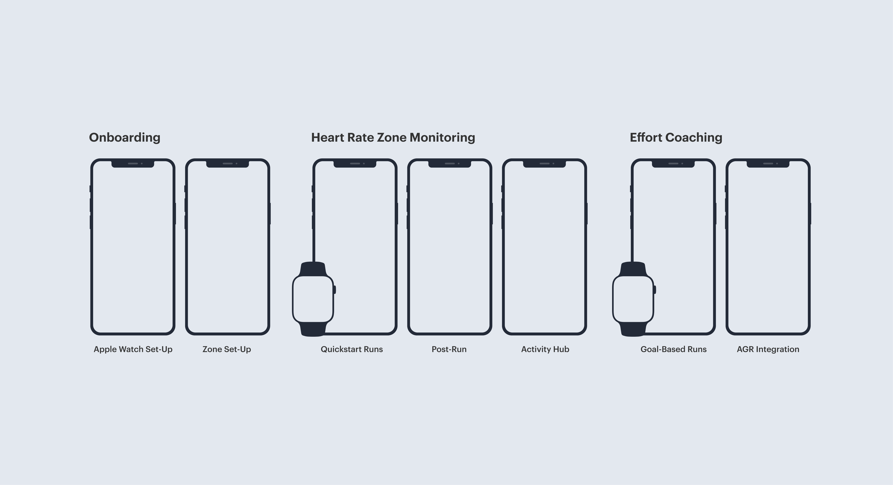
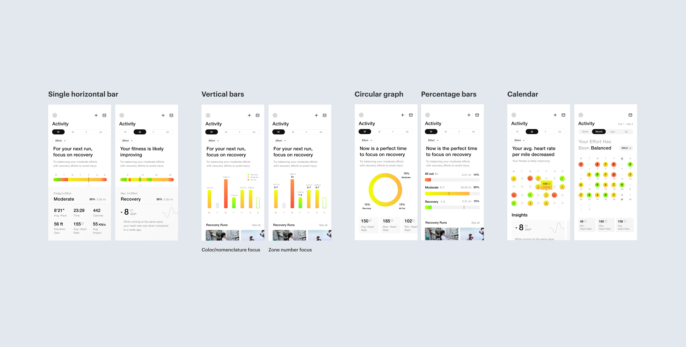
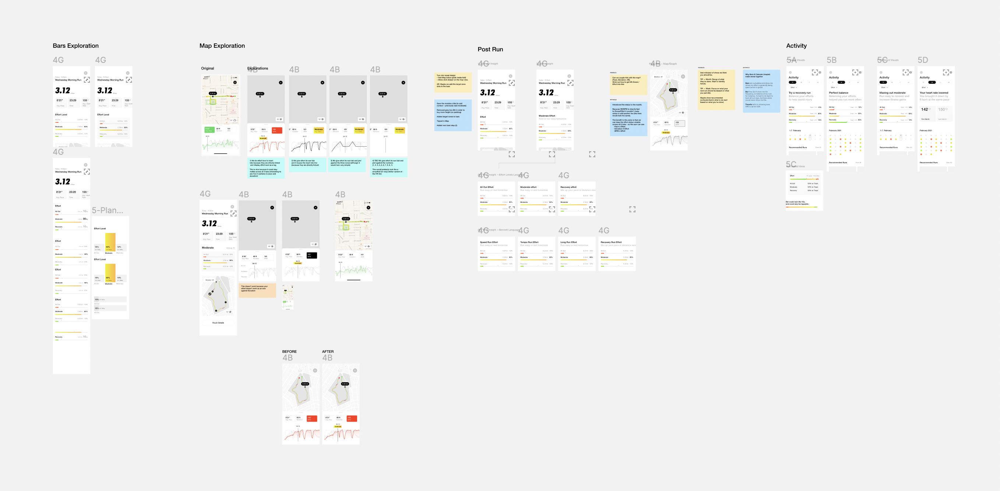
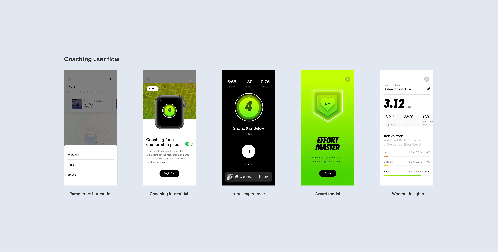
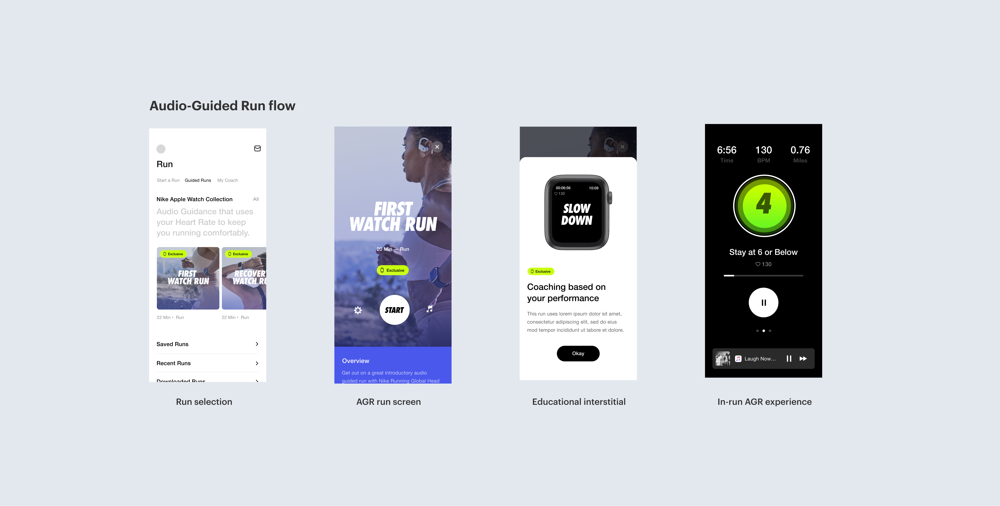
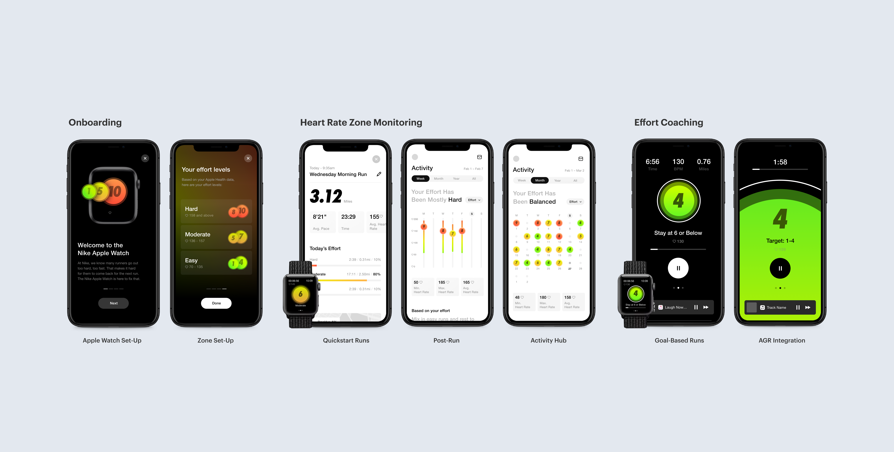

During my internship at Instrument, I worked with Nike as a client, focusing on designing a new heart rate monitor feature for their Nike Run Club app. The whole process spanned one month, with rapid prototyping stints based on Nike's feedback during biweekly reviews.
For this project, I collaborated closely with a PM, visual and UX designers, and a copywriter. I designed the data visualizations for the feature, as well as the mid-interactions and the Audio Guided Runs (AGR) integrations. I also contributed to the visual design of the overall feature, iterating on colors and iconography.
Heart-rate sensing wearables are exploding in popularity. To unlock this new technology, Nike recruited Instrument to explore the space while staying true to their distinct brand. This sprint focused on showcasing a potential Heart Rate feature integrated into the Nike Run Club app.
The end deliverable consisted of a series of prototype screens to facilitate conversation with the NRC product team with the intent of getting the heart rate monitor feature on their roadmap for future development.
Nike had conducted research and user interviews to scope out consumer habits and the desire for a heart rate monitor feature within their family of workout apps. Some of the insights from this research included:
🤕 Beginners dislike running because they go out too hard too fast. Survey participants believed that in order to achieve the benefits of working out, you have to exert yourself to uncomfortable or painful places every time.
🏃♀️ Runners loved the permission to run more comfortably. No matter where they were in their running journey, runners found the ability to minimize over-exertion appealing. Using their heart rate as a guide allowed these athletes to shift their negative mindset towards running.
🧐 We need to educate deeply, then nudge lightly. Connecting heart rate to effort to running was new and thus requires additional energy to understand. We need to educate runners upfront about WHY running more comfortably helps them, both physically and mentally.
Based on previous research and consumer insights, Nike landed on seven central mobile screens and two corresponding Apple Watch screens for the main user flow: the Apple Watch Set-Up, Zone Set-Up, Quickstart Runs, Post-Run, Activity Hub, Goal-Based Runs, and AGR Integrations.
To establish a relationship between the weekly and monthly views of the Activity Hub, and to provide insights to the user, I explored different ways to represent the user's running data. Using Nike's Visual Design System for their NRC app, I worked on establishing design patterns through text, modules, and numerical data. My goal was to clearly communicate the insights for any user regardless of their data literacy.
 Early explorations of data visualization models
Between the final screens, I designed interstitials and modals for smooth transitions. Visually, I focused on lightweight communication so the user could take in the information quickly and efficiently. By making these interactions brief and by giving the user autonomy to frame their running journey, I positioned the educative piece in a subtle and natural way that would not feel overwhelming or didactic.
AGRs are a major part of the Nike Run Club app, since they provide motivation and education for beginning runners specifically. I designed the entire AGR flow, which required visual treatment to draw attention to the Apple Watch association, as well as brief educational moments to teach the user how to maximize their watch's use while running.
Although these screens represent only a fraction of those my team and I produced for this new feature, they provide a high-level overview of the main user flow. Through these screens, users will be able to learn about leveraging their heart rate data to run better, longer, and safer.
I'm very thankful for the opportunity of working with a brand I admire so much. During my internship, I learned to produce and iterate on designs rapidly given limited periods in between client reviews. Among many other things, I learned to:
With such a large and significant brand as Nike, identity is already well-established. I learned to balance innovative ideas with a given design system, brand, voice, and feel. Instead of mirroring past Nike designs, I pushed for creative decisions surrounding the data visualizations in particular since I strongly believed in a holistic view of a user's data.
Using client reviews as benchmarks for improvement and iteration, I translated feedback on product strategy into actionable visual and interaction design tasks. Instead of wading in the ambiguity of critique, I always made sure to ask questions and proactively seek out the resources I needed in order to pursue next steps for designs.